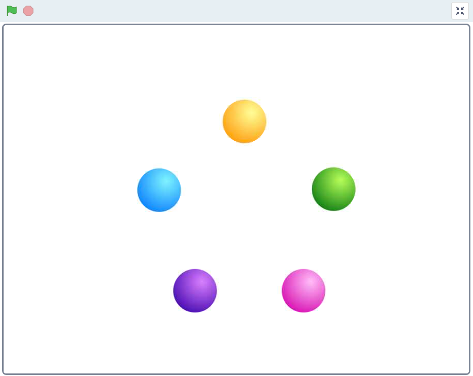
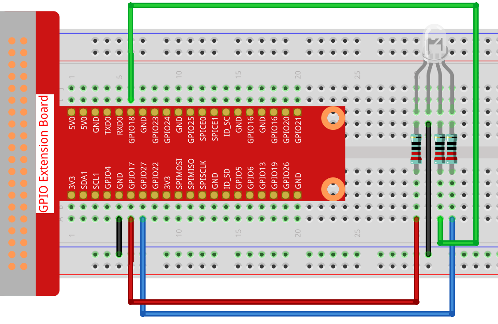
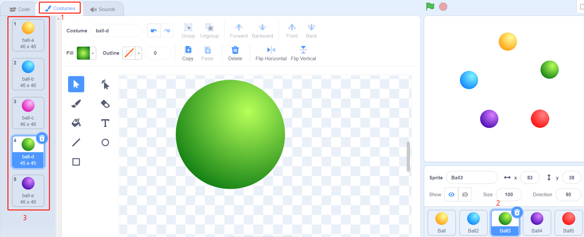
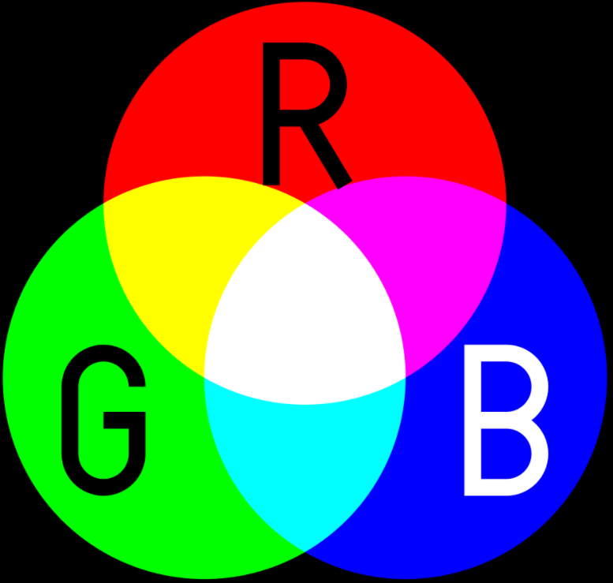
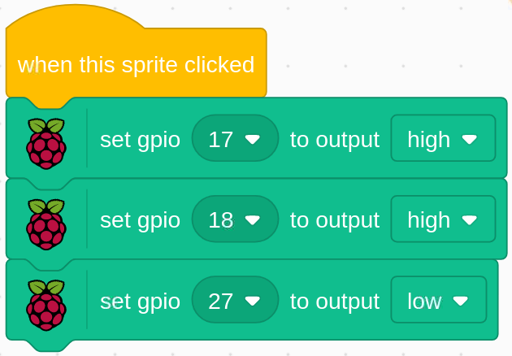

Nota
¡Hola! Bienvenido a la comunidad de entusiastas de SunFounder para Raspberry Pi, Arduino y ESP32 en Facebook. Únete a otros apasionados y profundiza en el mundo de Raspberry Pi, Arduino y ESP32.
¿Por qué unirte?
Soporte Experto: Resuelve problemas posventa y supera desafíos técnicos con el apoyo de nuestra comunidad y equipo.
Aprende y Comparte: Intercambia consejos y tutoriales para mejorar tus habilidades.
Acceso Exclusivo: Obtén acceso anticipado a anuncios de nuevos productos y adelantos especiales.
Descuentos Especiales: Disfruta de descuentos exclusivos en nuestros productos más recientes.
Promociones Festivas y Sorteos: Participa en sorteos y promociones durante las festividades.
üëâ ¬øListo para explorar y crear con nosotros? Haz clic en [Aqu√≠] y únete hoy.
1.2 Pelotas de Colores
Al hacer clic en las pelotas de diferentes colores en el área de escenario, el LED RGB se iluminará en distintos colores.
Componentes Necesarios

Construye el Circuito
Carga el Código y Observa Qué Sucede
Después de cargar el archivo de código (1.2_colorful_balls.sb3) en Scratch 3, el LED RGB se iluminará en amarillo, azul, rojo, verde o morado respectivamente al hacer clic en la pelota correspondiente.
Consejos sobre los Sprites
Elimina el sprite predeterminado y luego selecciona el sprite Pelota.

Y duplícalo 5 veces.

Selecciona diferentes disfraces para estos 5 sprites de Pelota y colócalos en sus posiciones correspondientes.
Consejos sobre el Código
Antes de entender el código, necesitamos comprender el RGB color model.
El modelo de color RGB es un modelo de color aditivo en el cual la luz roja, verde y azul se combinan de varias maneras para reproducir una amplia gama de colores.
En la mezcla aditiva de colores, al sumar rojo y verde obtenemos amarillo; al sumar verde y azul obtenemos cian; al sumar azul y rojo obtenemos magenta; al combinar los tres colores primarios obtenemos blanco.
{kind=link}
Un LED RGB es una combinación de 3 LEDs (rojo, verde, azul) en un solo paquete, y puedes producir casi cualquier color combinando esos tres colores. Tiene 4 pines, uno de los cuales es GND, y los otros 3 pines controlan los 3 LEDs respectivamente.
Así que el código para hacer que el LED RGB se ilumine en amarillo es el siguiente:
Cuando se hace clic en el sprite de Pelota (pelota amarilla), configuramos gpio17 en alto (LED rojo encendido), gpio18 en alto (LED verde encendido) y gpio27 en bajo (LED azul apagado) para que el LED RGB se ilumine en amarillo.
Puedes escribir códigos similares para otros sprites para que los LEDs RGB se iluminen en los colores correspondientes.